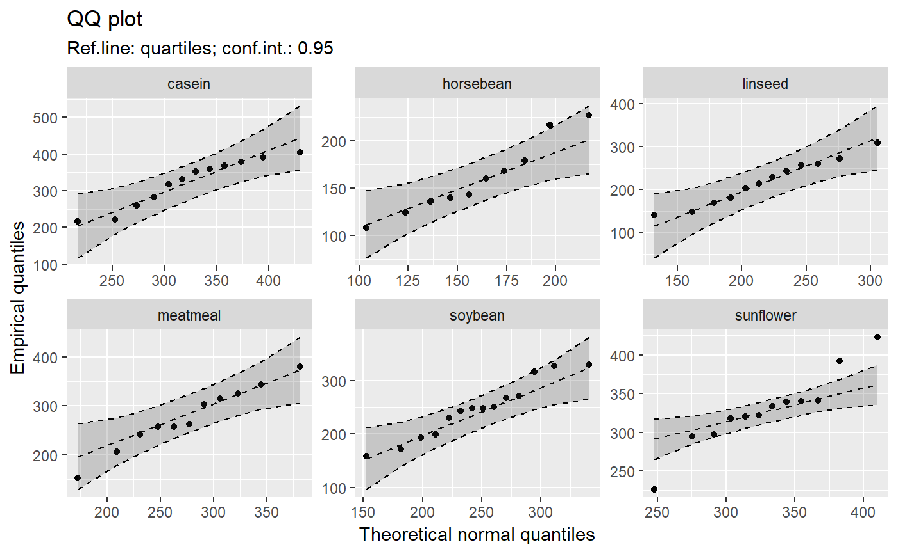
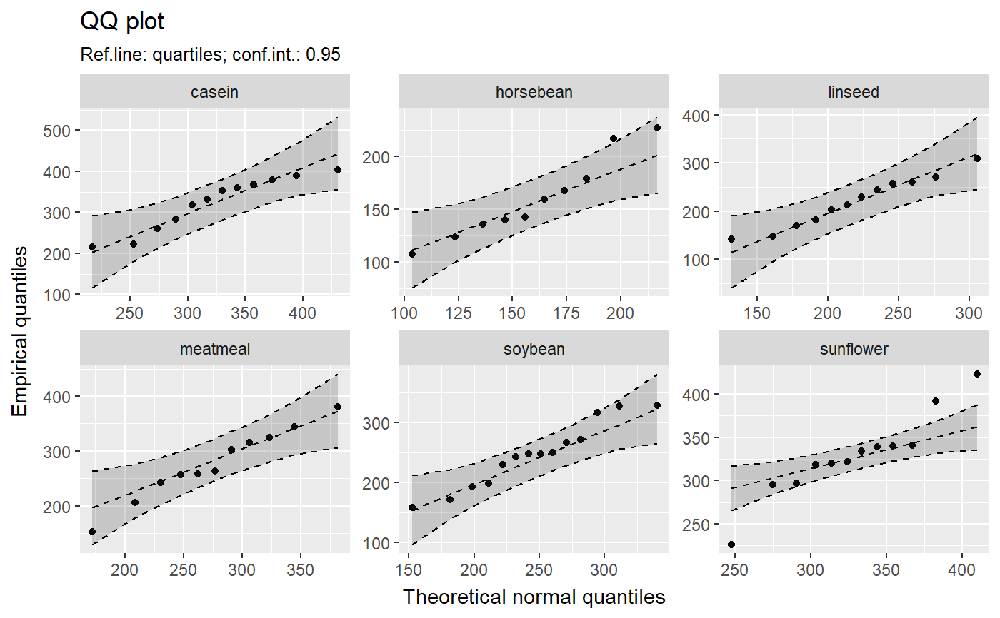
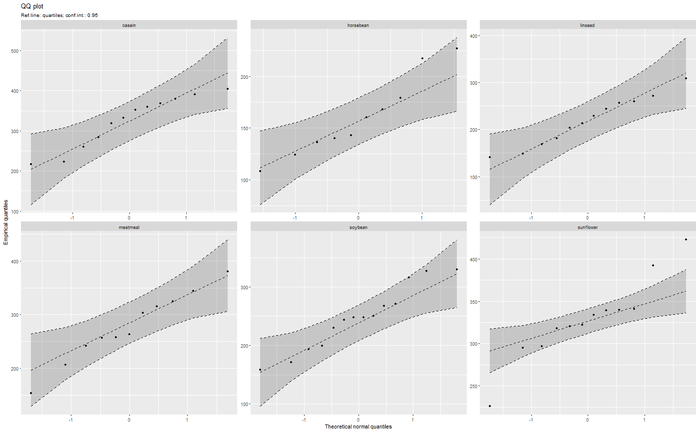
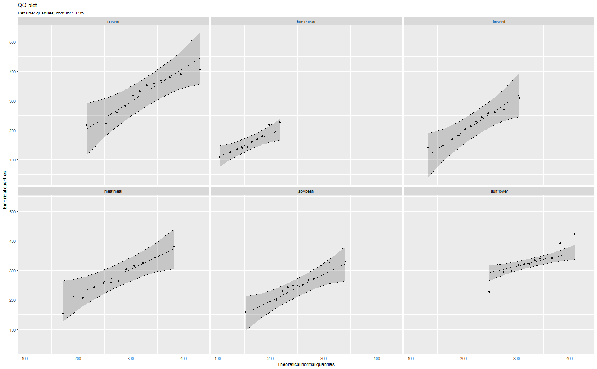
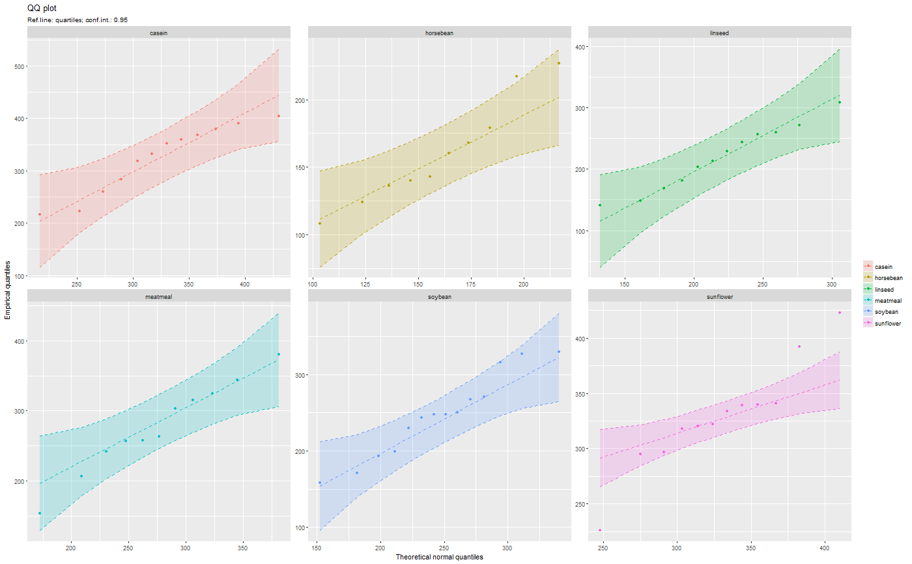
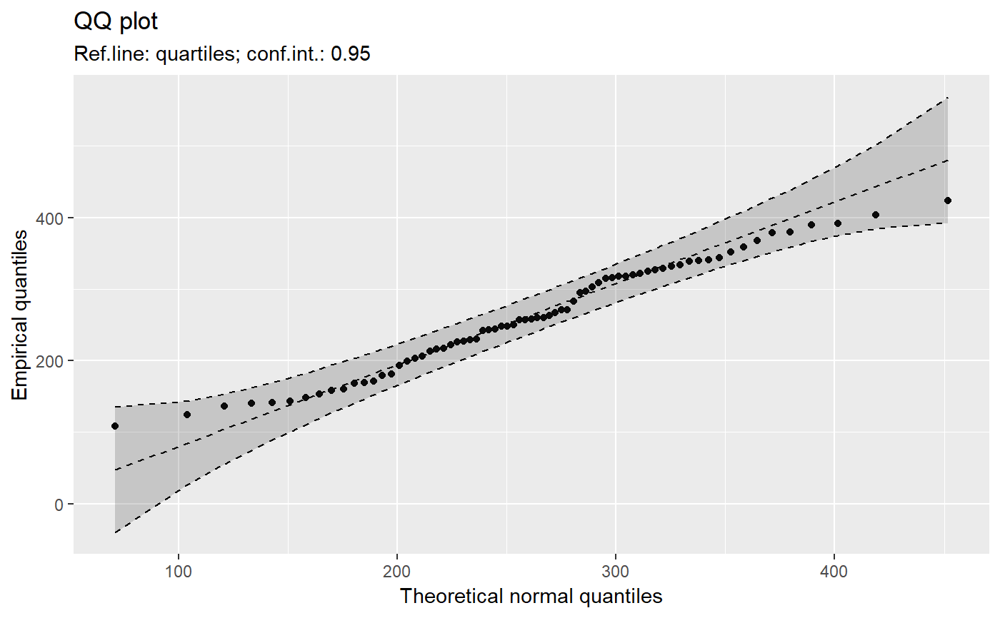
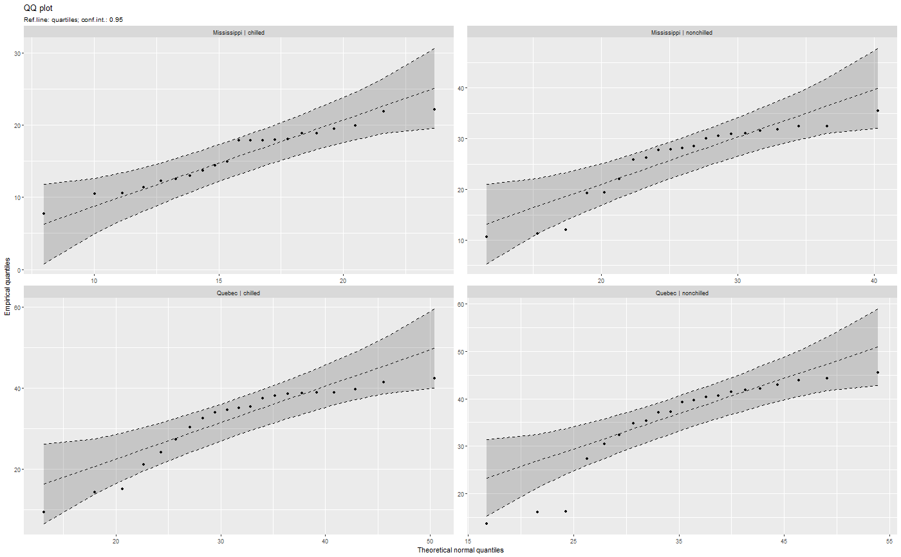
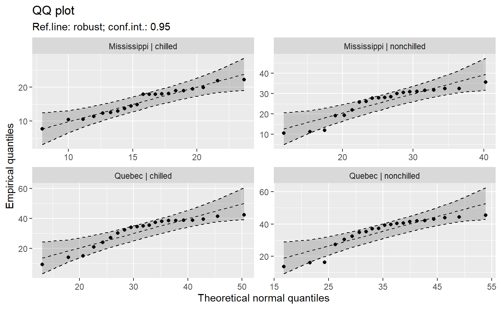

qq_data.RdCompute data necessary to plot a quantile comparison plot (qq-plot).
qq_data(y, data = NULL, distribution = "norm", ..., line = c("quartiles", "robust", "int=0,slope=1", "0,1", "none"), envelope = 0.95, method = c("mle-normal", "trimmed-normal", "moment-normal", "any"), labels = NULL, groups = NULL, sep = " | ") # S3 method for qqdata coef(object, ...) # S3 method for qqdata plot(x, ..., use_colors = FALSE, scales = "free")
| y | (formula|numeric|character)
|
|---|---|
| data | (data frame| |
| distribution | root name of comparison distribution -- e.g., |
| ... | Parameters to be passed to function, selected in |
| line | (string) A parameter, that controls how reference line is drawn. Options:
|
| envelope | (numeric | |
| method | (string:
Options |
| groups | ( |
| sep | (not used yet). |
| object | A |
| x | A |
| use_colors | (logical) use colors for multiple groups |
| scales | ("free"|"free_x"|"free_y"|"fixed")
a parmeter to be passed to
|
An object, which inherits from classes qqdata and
data.frame. The object contains information, needed
to plot a qqplot with reference line and its confidence intervals.
These variables are contained:
x – x axis values;
y – y axis values for points of qq plot;
labels – labels for each point;
ref_y – y axis values for reference line
ref_ci_upper and ref_ci_lower – y axis values for upper and lower pointwise confidence interval of a reference line.
Function qq_data is inspired by qqPlot() in package car
(writen by J. Fox).
library(biostat) data(chickwts, package = "datasets") # ~~~~~~~~~~~~~~~~~~~~~~~~~~~~~~~~~~~~~~~~~~~~~~~~~~~~~~~~~~ # Input as formula + data: my_qq_df <- qq_data(~weight, data = chickwts) head(my_qq_df)#> x y labels ref_y ref_ci_upper ref_ci_lower #> 7 70.98569 108 7 47.42369 135.0090 -40.16157 #> 8 103.86168 124 8 84.83439 143.0135 26.65531 #> 3 121.05847 136 3 104.40320 153.1069 55.69954 #> 10 133.26529 140 10 118.29376 161.8545 74.73305 #> 14 142.93372 141 14 129.29579 169.5062 89.08535 #> 9 151.04785 143 9 138.52913 176.3377 100.72059coef(my_qq_df)#> intercept slope refline_type plot_envelope conf #> qq_refline -33.35333 1.137934 quartiles TRUE 0.95# Column ".group" is added if applied by group: my_qq_df <- qq_data(weight ~ feed, data = chickwts) head(my_qq_df)#> .group x y labels ref_y ref_ci_upper ref_ci_lower #> 1 casein 216.7557 216 68 203.9755 291.9501 116.0009 #> 2 casein 252.6175 222 69 244.2674 307.2708 181.2639 #> 3 casein 273.4770 260 63 267.7038 323.2246 212.1830 #> 4 casein 289.7446 283 70 285.9810 337.9149 234.0472 #> 5 casein 303.9262 318 65 301.9146 351.9821 251.8470 #> 6 casein 317.1284 332 71 316.7477 365.9956 267.4998coef(my_qq_df)#> .group intercept slope refline_type plot_envelope conf #> 1 casein -39.55714 1.1235348 quartiles TRUE 0.95 #> 2 horsebean 29.42192 0.7940267 quartiles TRUE 0.95 #> 3 linseed -40.70818 1.1820946 quartiles TRUE 0.95 #> 4 meatmeal 50.88326 0.8445614 quartiles TRUE 0.95 #> 5 soybean 16.85751 0.8989116 quartiles TRUE 0.95 #> 6 sunflower 183.09510 0.4359916 quartiles TRUE 0.95# ~~~~~~~~~~~~~~~~~~~~~~~~~~~~~~~~~~~~~~~~~~~~~~~~~~~~~~~~~~ # Input as variable name + data: my_qq_df <- qq_data("weight", data = chickwts) head(my_qq_df)#> x y labels ref_y ref_ci_upper ref_ci_lower #> 7 70.98569 108 7 47.42369 135.0090 -40.16157 #> 8 103.86168 124 8 84.83439 143.0135 26.65531 #> 3 121.05847 136 3 104.40320 153.1069 55.69954 #> 10 133.26529 140 10 118.29376 161.8545 74.73305 #> 14 142.93372 141 14 129.29579 169.5062 89.08535 #> 9 151.04785 143 9 138.52913 176.3377 100.72059coef(my_qq_df)#> intercept slope refline_type plot_envelope conf #> qq_refline -33.35333 1.137934 quartiles TRUE 0.95#> .group x y labels ref_y ref_ci_upper ref_ci_lower #> 1 casein 216.7557 216 68 203.9755 291.9501 116.0009 #> 2 casein 252.6175 222 69 244.2674 307.2708 181.2639 #> 3 casein 273.4770 260 63 267.7038 323.2246 212.1830 #> 4 casein 289.7446 283 70 285.9810 337.9149 234.0472 #> 5 casein 303.9262 318 65 301.9146 351.9821 251.8470 #> 6 casein 317.1284 332 71 316.7477 365.9956 267.4998coef(my_qq_df)#> .group intercept slope refline_type plot_envelope conf #> 1 casein -39.55714 1.1235348 quartiles TRUE 0.95 #> 2 horsebean 29.42192 0.7940267 quartiles TRUE 0.95 #> 3 linseed -40.70818 1.1820946 quartiles TRUE 0.95 #> 4 meatmeal 50.88326 0.8445614 quartiles TRUE 0.95 #> 5 soybean 16.85751 0.8989116 quartiles TRUE 0.95 #> 6 sunflower 183.09510 0.4359916 quartiles TRUE 0.95# ~~~~~~~~~~~~~~~~~~~~~~~~~~~~~~~~~~~~~~~~~~~~~~~~~~~~~~~~~~ # Input as vector my_qq_df <- qq_data(chickwts$weight) head(my_qq_df)#> x y labels ref_y ref_ci_upper ref_ci_lower #> 7 70.98569 108 7 47.42369 135.0090 -40.16157 #> 8 103.86168 124 8 84.83439 143.0135 26.65531 #> 3 121.05847 136 3 104.40320 153.1069 55.69954 #> 10 133.26529 140 10 118.29376 161.8545 74.73305 #> 14 142.93372 141 14 129.29579 169.5062 89.08535 #> 9 151.04785 143 9 138.52913 176.3377 100.72059coef(my_qq_df)#> intercept slope refline_type plot_envelope conf #> qq_refline -33.35333 1.137934 quartiles TRUE 0.95# ~~~~~~~~~~~~~~~~~~~~~~~~~~~~~~~~~~~~~~~~~~~~~~~~~~~~~~~~~~ # Input as vector, several groups. # Column ".group" is added my_qq_df <- qq_data(chickwts$weight, groups = chickwts$feed) head(my_qq_df)#> .group x y labels ref_y ref_ci_upper ref_ci_lower #> 1 casein 216.7557 216 68 203.9755 291.9501 116.0009 #> 2 casein 252.6175 222 69 244.2674 307.2708 181.2639 #> 3 casein 273.4770 260 63 267.7038 323.2246 212.1830 #> 4 casein 289.7446 283 70 285.9810 337.9149 234.0472 #> 5 casein 303.9262 318 65 301.9146 351.9821 251.8470 #> 6 casein 317.1284 332 71 316.7477 365.9956 267.4998coef(my_qq_df)#> .group intercept slope refline_type plot_envelope conf #> 1 casein -39.55714 1.1235348 quartiles TRUE 0.95 #> 2 horsebean 29.42192 0.7940267 quartiles TRUE 0.95 #> 3 linseed -40.70818 1.1820946 quartiles TRUE 0.95 #> 4 meatmeal 50.88326 0.8445614 quartiles TRUE 0.95 #> 5 soybean 16.85751 0.8989116 quartiles TRUE 0.95 #> 6 sunflower 183.09510 0.4359916 quartiles TRUE 0.95library(biostat) data(chickwts, package = "datasets") # Input as formula + data: my_qq_df <- qq_data(weight ~ feed, data = chickwts) plot(my_qq_df)class(qq_single)#> [1] "qqdata" "data.frame"# More than one grouping variable data(CO2, package = "datasets") qq_co2 <- qq_data(uptake ~ Type + Treatment, data = CO2) plot(qq_co2)